Fourteen product categories covering healthcare workers and uniformed services — click any photo to enlarge.
01
Footwear & Health Shoes
Kasut & Kasut Kesihatan
Medsooth™ medical health shoes for all-day comfort, plus approved uniform shoes for Ministry of Health (KKM) staff and trainees. Learn about Medsooth™ technology →
Medsooth™ Health Shoes
Medsooth™ Classic Slip-OnPoron® insole · Coolmax® liningMedsooth™ BlackOrthotic arch support
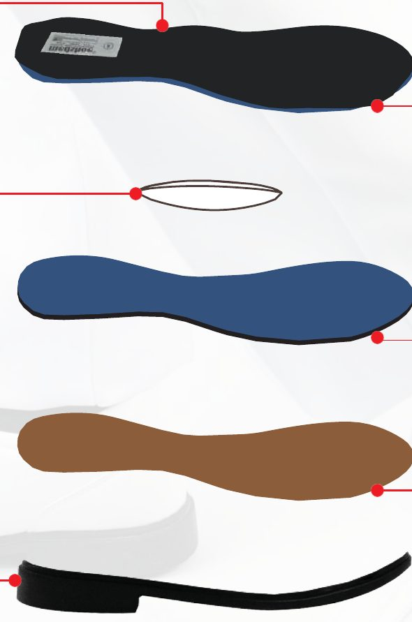
Multi-layer cushioning systemCoolmax® · Poron® · EVA · rubber outsole
KKM Uniform Shoes — Women
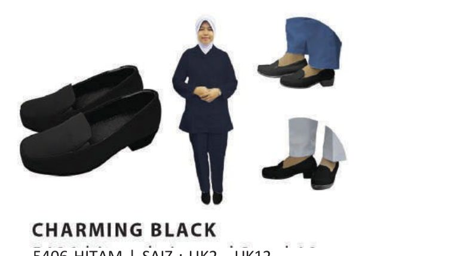
Charming Black5406 Black · UK2 – UK12
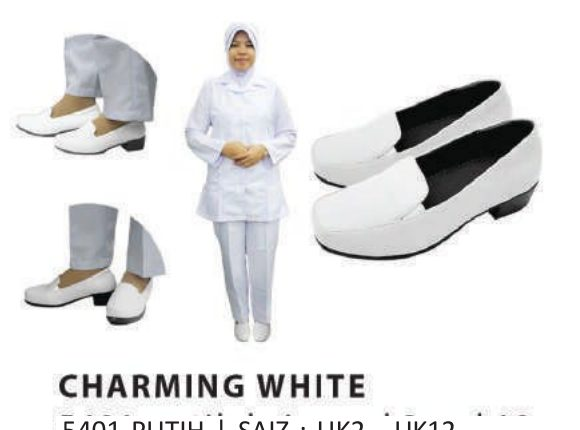
Charming White5401 White · UK2 – UK12
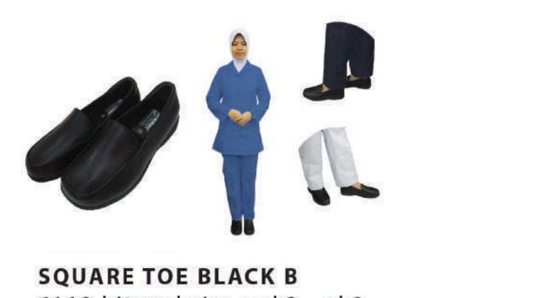
Square Toe Black B6110 Black · UK2 – UK12
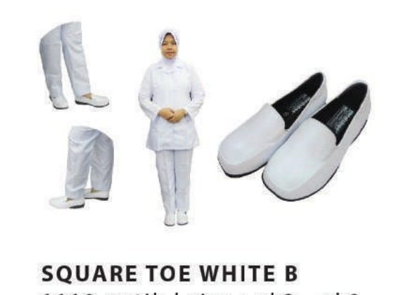
Square Toe White B1110 White · UK2 – UK12
KKM Uniform Shoes — Men
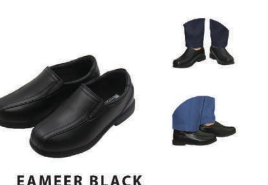
Eameer Black6031 Black · UK4 – UK14
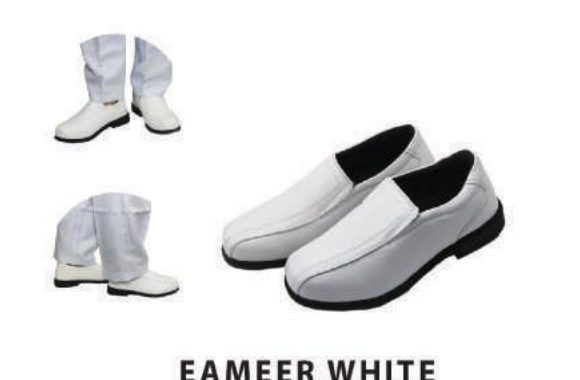
Eameer White6030 White · UK4 – UK14
Trainee Shoes (Kasut Pelatih)
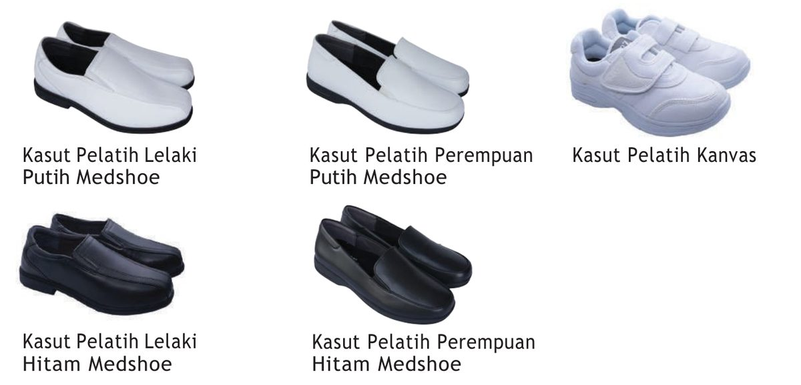
Medsooth™ trainee shoes for men and women in white and black, plus canvas trainee shoes.
02
Nurse Tudung & Caps
Tudung & Topi Jururawat
Nursing tudung and caps made to Ministry of Health (KKM) specifications, with colour-coded piping and lace by rank.
Nurse Cap Specification (Topi Kejururawatan KKM)
Hard linen, bluish white. Cooling, lightweight and breathable; resistant to bacteria, UV and chlorine; no ironing needed.
Cap lace 7cm / 6cm / 5cm
Chief Nursing Supervisor / Nursing Supervisor
Cap lace 3cm
Chief Nurse
Blue piping
Registered Nurse (Jururawat Terlatih)
Purple piping
Community Nurse (Jururawat Masyarakat)
Red piping
Assistant Nurse (Penolong Jururawat)
Green piping
Registered Midwife (Bidan Terlatih)
Orange piping
Dental Surgery Assistant
Yellow piping
Dental Nurse (Jururawat Pergigian)
Plain
Trainee (Pelatih)
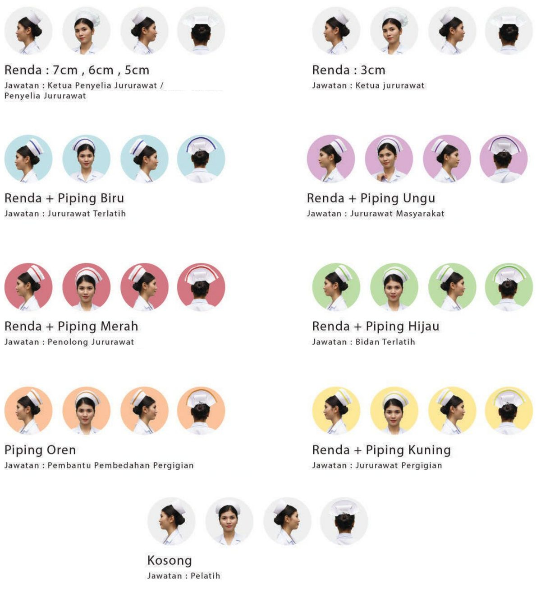
Nurse caps by position (Topi Anggota Kejururawatan).
Stretchable, cooling, lightweight and breathable. Resistant to bacteria, UV and chlorine. Holds its shape, resists wrinkles, fast drying.
Piping
1cm, colour by position (same colours as nurse caps)
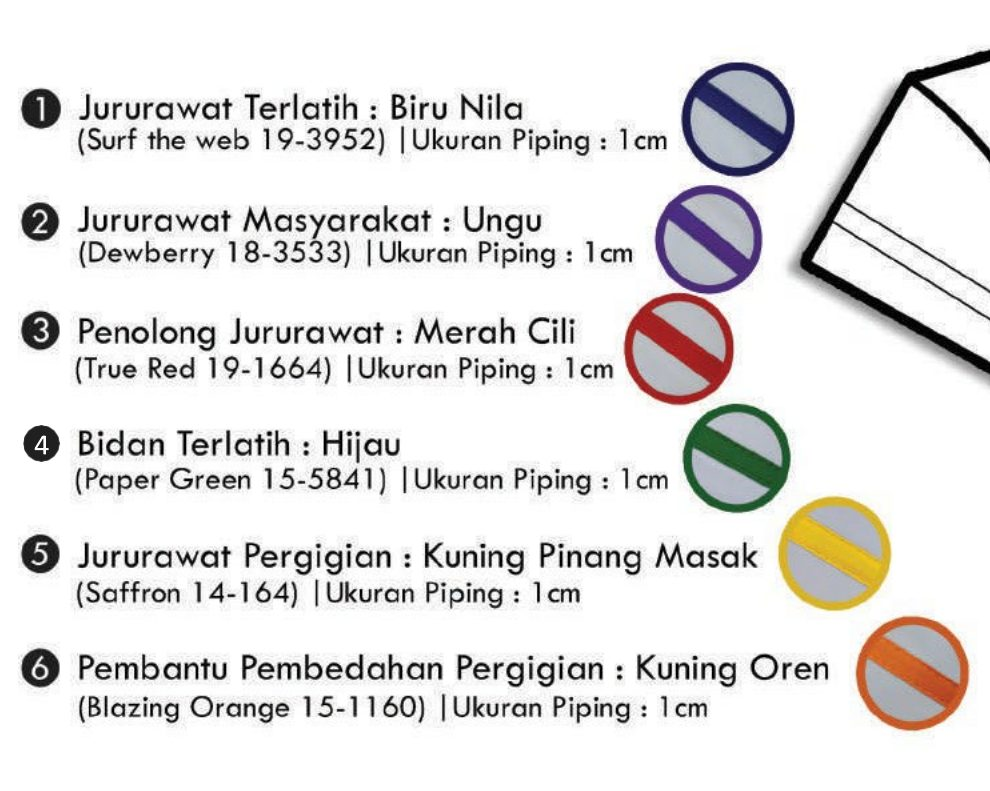
Piping colours and Pantone references.
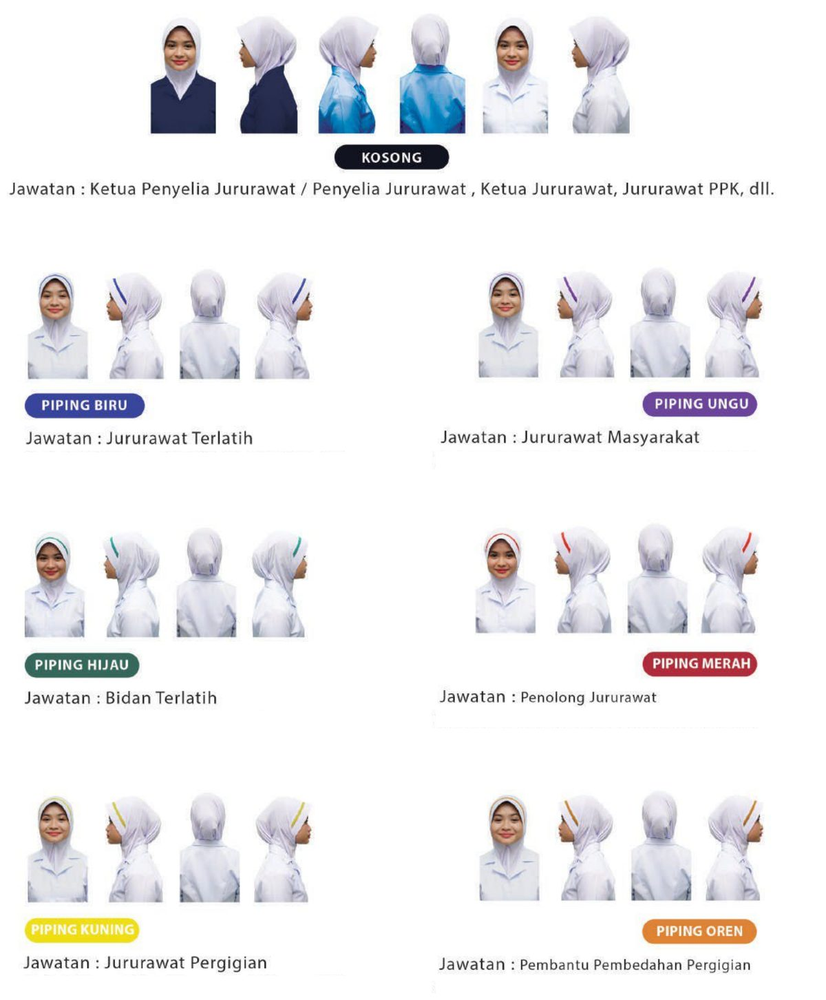
Nurse tudung by position — hard Vakram, Span or soft Scuba awning.
Hospital & University Nurse Tudung
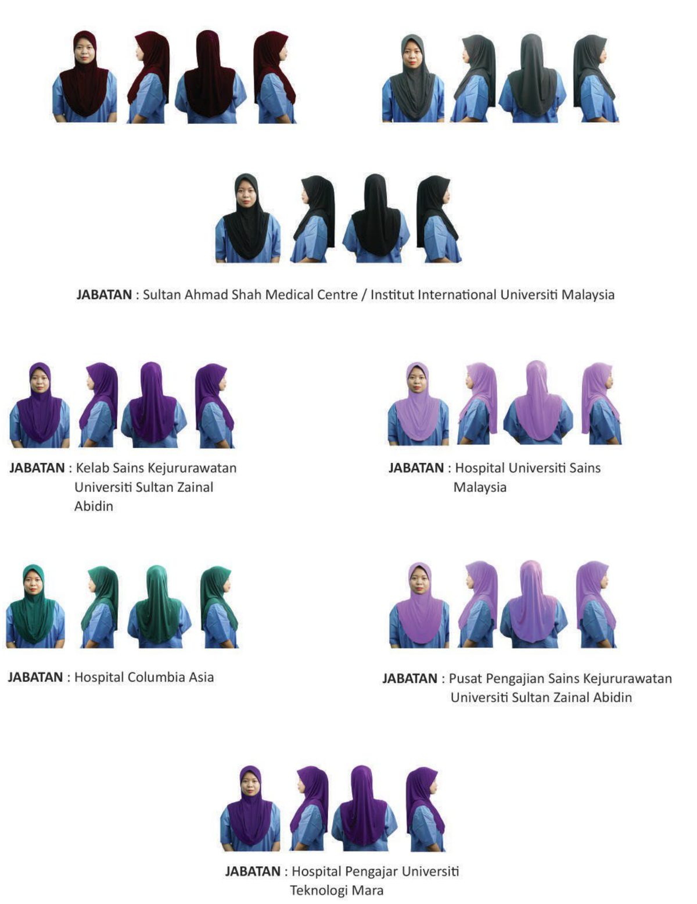
Sultan Ahmad Shah Medical Centre, UniSZA, HUSM, Columbia Asia, HPUiTM and more.
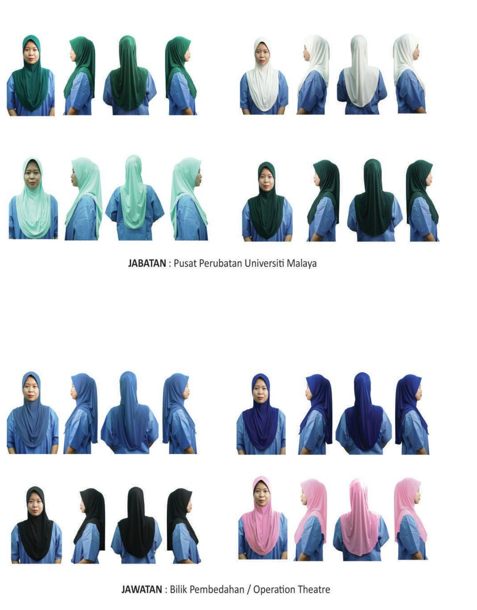
Pusat Perubatan Universiti Malaya and operation theatre tudung.
03
Ministry of Health Apparel & Kit
Pakaian & Kelengkapan Kementerian Kesihatan Malaysia
Complete trainee kits and uniform fabric for Ministry of Health (KKM) programmes.
KKM trainee uniform with tudung or cap.
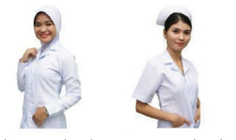
Trainee tudung and trainee cap.
Trainee uniform fabric (Kain Uniform Pelatih)
Medical Lab Technologist
X-Ray Radiographer
Public Health Assistant (PKA)
Physiotherapist
Trainee Nurse
Community Health Trainee
Maternity uniform
Occupational Therapist
Assistant Pharmacist
Dental Therapist
Dental Technologist
and more
04
Textiles & Fabrics
Tekstil & Fabrik
Fabric stock.
We source a wide range of fabrics and textiles from China, Korea, India, Pakistan, Vietnam, Japan and local Malaysian mills, including:
Lycra
Mosscrepe
Polyester
Cotton
Comocrepe
Linen
Twill
Polyester Twill
Chiffon
Custom to order
05
Hospital Equipment & Supplies
Peralatan & Kelengkapan Hospital
Uniforms and scrub suits for private hospitals and clinics, made to each hospital's colours and branding. Contact us for hospital equipment and supplies.